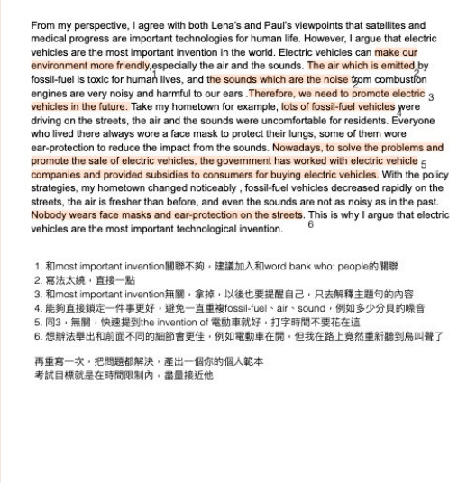

文章看完只剩印象
定位速度慢、換句話說能力不足，題目一換問法就找不到答案。
雅思不是狂刷題，也不是背模板。這套衝刺系統把閱讀、聽力、寫作、口說拆成可執行、可驗收、可校準的路徑，帶你從卡分到達標。
Ace Your IELTS 以考生痛點為起點，先釐清卡分原因，再用題型策略、顧問批改與模考節奏把練習變成可驗收的進步。
定位速度慢、換句話說能力不足，題目一換問法就找不到答案。
口音、干擾資訊與速度同時壓上來，練習很多卻不知道錯因。
不是多寫就會進步，而是要知道論證、連貫、用字與文法哪裡扣分。
想點、延伸、語調與流暢度需要被拆解練習，而不是只叫自己多講。
從 20+ 小時精華影片建立底層觀念，再用模考、批改與顧問課校準，最後用考前節奏把分數穩住。
雅思流程、電腦考策略、各科評分重點與題型邏輯一次整理，不再東查西找。
每次練習都要能執行、驗證、重複。寫作與口說透過真人顧問批改，把錯誤變成下一輪練習清單。
37 回電腦考模考與每週線上顧問團體課，協助你確認速度、準確率與考場節奏。
資料以 Ace Your IELTS 頁面為準，補成更適合首頁掃讀的資訊架構。

找出問題，提供建議

確認進步，再次調整

確立範本，設定目標
David、Rosa、Pallas 分別支援聽力寫作、閱讀與口說，
補上雅思各科最容易卡住的關鍵。
台大外文系畢業，資深留學考試顧問。雅思 9.0/9.0，寫作 8.5、口說 9.0。

師大英語系畢業，資深英文考試顧問。雅思 8.5/9.0，閱讀 9.0。
加拿大名校畢業，具國外求學與外商工作經驗。雅思 8.5/9.0，口說 9.0。
照 David 老師教的 echoing 來練 intonation，也會模仿 David 老師的錄音檔，個人覺得這個方法滿有效的。KQJ｜David+Rosa 精華班心得
David 的課超乎我想像之外的棒。上課後我才知道，不只是回答問題，而是要想題目背後的 why。HiAFu｜不像補習班的良師益友
我覺得 David 的課最棒的其中一點，就是會幫大家組讀書會。我在讀書會真的進步非常多。學員回饋｜讀書會與顧問陪跑
報名後三個工作天內寄出確認信，影片課、題庫、AI 工具帳號同步開通，並邀請加入 Line 官方帳號與班級群組。